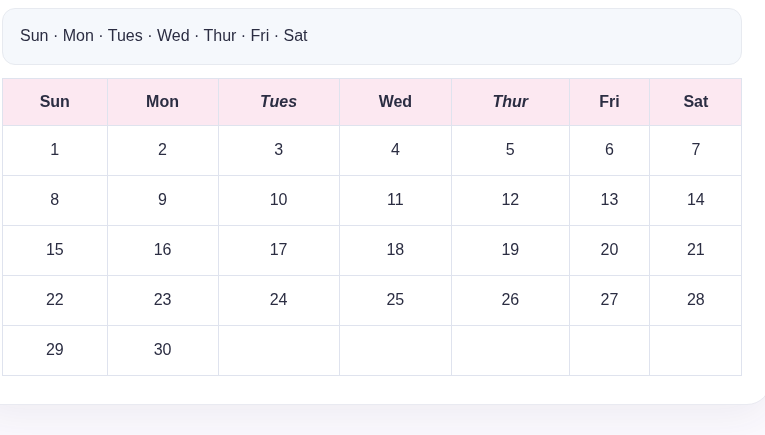

js
.
practice
← Lab08 / Danh sách bài
JavaScript Labs
/
Lab08
/
08.7
LAB08 / EXERCISE 07
Arrays
Dùng push, unshift, vòng lặp và điều kiện tạo lịch.
Kết quả thực hành
Mở ảnh lớn ↗

Mở phần thực hành
Thử trực tiếp